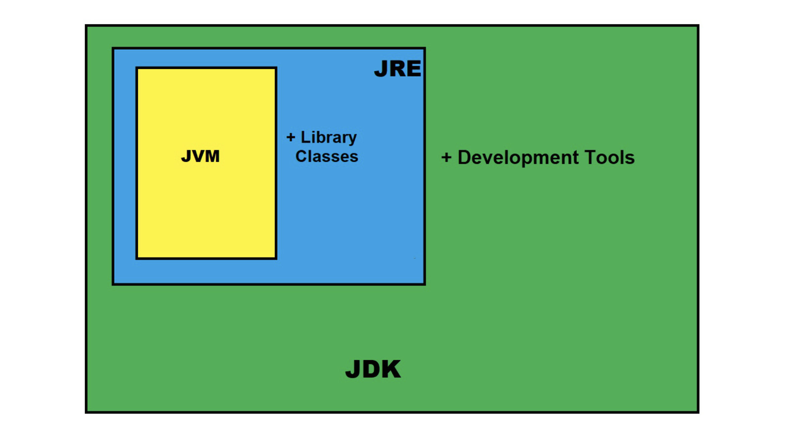

JVM (ghi chú)
Java virtual machine - JVM - Máy ảo Java, là máy ảo giúp máy tÃnh thực thi các chương trình viết bằng Java hoặc các ngôn ngữ khác có trình biên dịch tạo ra bytecode. Việc tạo ra JVM giúp ngôn ngữ Java có tÃnh linh động, viết một lần thực thi ở nhiá»u nơi (Write Once, Run Anywhere), cũng như ẩn giấu rất nhiá»u phần thiết kế, hiện thực phức tạp liên quan đến việc láºp trình như quản lý bộ nhớ, sự phụ thuộc, tối ưu thực thi,... để láºp trình viên có thể táºp trung nhiá»u hơn và o việc phát triển ứng dụng.
Tổng quan
Những gì ngôn ngữ Java cung cấp cho láºp trình viên có thể gói gá»n ở high-level như hình sau:
JVM: trình thực thi bytecode, load class, quản lý vùng nhớ,JRE: bao gồmJVM, các module thư viện cốt lõi của Java (Object, String, Thread, ClassLoader,...), các thư viện tiện Ãch khác như log, sql, desktop và các thư viện native được viết bằng C/C++.- Bắt đầu từ Java 9,
JREđược xem như là thà nh phần luáºn lý vì kể từ Java 9, Java ra mắt khái niệm module, Oracle không cung cấp riêng rẽ JRE nữa mà gợi ý người dùng có thể tự build môi trường runtime tuỳ thuộc và o ứng dụng bằngjlink.
- Bắt đầu từ Java 9,
JDK: bao gồmJREvà các công cụ hỗ trợ phát triển (javac để biên dịch, java để chạy, jar để đóng gói,...).

Váºy từ thông tin trên, nếu cần thực thi bytecode, chỉ cần tạo môi trường runtime là đủ.
JVM
Thà nh phần quan trá»ng báºc nhất trong Java. Những việc như quản lý bộ nhớ, thu dá»n rác (garbage collector), tối ưu thực thi bytecode được JVM hiện thực thay cho láºp trình viên.
Có thể thấy JVM được không?
JVM là trình thực thi chương trình viết bằng Java hoặc các ngôn ngữ khác có thể biên dịch ra bytecode, váºy trước tiên nó phải chạy được trong máy tÃnh, váºy nó là 1 process, có thể xem các process jvm trong máy bằng lệnh jcmd -l được cung cấp bởi JDK.
55784 jdk.jcmd/sun.tools.jcmd.JCmd -l
85065 org.lift.backend.BackendApplication
69932 com.intellij.idea.Main
Tên chương trình là tên đầy đủ của class chứa hà m main.
Váºy bên trong JVM có những thà nh phần nà o?

Class loader subsystem
Thà nh phần chịu trách nhiệm định vị, nạp (loading), liên kết (linking), khởi tạo (initialization) các class và o JVM.
- Nạp class: nạp class từ thư viện core hoặc các file bytecode.
- Liên kết: kiểm tra tÃnh đúng đắn của các file class, cấp phát vùng nhớ cho các biến, khởi tạo giá trị mặc định.
- Khởi tạo: chạy các đoạn code khởi tạo trong class (
static { ... }).
Có 3 loại class loader được cung cấp bởi JVM, mỗi loại hoạt động với các đối tượng khác nhau.
Bootstrap classLoader: loader duy nhất được hiện thực bằng native code thay vì Java code, chịu trách nhiệm load các class cần thiết được yêu cầu bởi JVM, và dụjava.base.Platform Class Loader: load các Java SE modules (Java Platform, Standard Edition java.sql,...), customs module được cung cấp bởi láºp trình viên.- [Hướng dẫn phân loại module]
Application classLoader: load các class trong đường dẫn classpath của ứng dụng (-cphay biến môi trườngCLASSPATH).
Ba loại loader nà y kế thừa nhau, theo thứ tự cha - con là Bootstrap > Extension > Application, ngoà i ra láºp trình viên có thể tự hiện thực các lớp loader và sá» dụng.
Nguyên tắc
- Nguyên tắc uỷ thác (parent delegation principle): JVM sá» dụng nguyên lý uỷ quyá»n cho class cha khi load class, tức là khi có yêu cầu,
load loaderđẩy yêu cầu lên cho lớp cha của nó trước, nếu không tìm thấy thì nó sẽ xá» lý yêu cầu. Nguyên lý là m việc nà y phù hợp với việc chia trách nhiệm cho từng loạiclass loader, và dụ đối với những class core của Java, chỉ cóBootstrap classLoadermới có quyá»n load, loại trừ khả năng láºp trình viên tạo các class trùng tên với thư viện core và thay đổi hà nh vi, tóm lại là tăng tÃnh bảo máºt, tránh lặp lại công việc của nhau.
// TrÃch dẫn hà m ClassLoader#loadClass.
protected Class<?> loadClass(String name, boolean resolve)
throws ClassNotFoundException
{
try {
if (parent != null) {
c = parent.loadClass(name, false);
} else {
c = findBootstrapClassOrNull(name);
}
} catch (ClassNotFoundException e) {
// ClassNotFoundException thrown if class not found
// from the non-null parent class loader
}
}
-
Nguyên tắc hiển thị (visibility principle): chỉ cung cấp khả năng hiển thị cho trình nạp của class con để xem tất cả các class được tải bởi một parent class, chứ không phải ngược lại.
-
Nguyên tắc duy nhất (uniqueness principle): mỗi class sẽ chỉ được tải một lần.
-
Nguyên tắc lười (lazy loading principle): class được nạp theo yêu cầu sá» dụng thay vì được nạp khi JVM khởi tạo.
Code
-
[Và dụ cách hiện thực custom class loader].
-
[Và dụ cách xem class loader của một class cụ thể].
public static void main(String[] args) {
System.out.println("Classloader of ArrayList:"
+ ArrayList.class.getClassLoader());
System.out.println("Classloader of DriverManager:"
+ DriverManager.class.getClassLoader());
System.out.println("Classloader of Loader:"
+ Loader.class.getClassLoader());
}
Chạy mã nguồn (2) được kết quả:
ArrayListthuộc thư viện core nên được load bởiBootstrap, loader nà y được viết bằng native code nên lúc in ra sẽ thấynull.DriverManagerthuộc modulejava.sqlvà được load bởiPlatform loader.Loaderlà một class bình thường và được load bởiAppClass loader.

Runtime data area

JVM chia bộ nhớ thà nh nhiá»u vùng dữ liệu để lưu trữ các đối tượng khác nhau:
-
Method area: khái niệm luáºn lý, HotSpot JVM hiện thực phần nà y với tên gá»iMetaspacesá» dụng native memory của hệ điá»u hà nh (trước Java 9 gá»i lÃPermGen, sá» dụng heap), lưu trữ các thông tin:- Class metadata.
- Runtime constant pool.
- Bytecode của hà m.
- Biến static: giá trị của kiểu dữ liệu primitive hoặc giá trị tham chiếu.
-
Stack: JVM sá» dụng stack (cấu trúc LIFO) để quản lý việc gá»i hà m:-
Cơ chế:
- Gá»i hà m -> tạo ra frame và push lên stack.
- Thực thi xong hà m -> pop frame ra khá»i stack.
-
Frame chứa dữ liệu vỠhà m đang được thực thi, bao gồm một số thông tin sau:
Mảng biến cục bộ và tham số: truy xuất theo index, nếu là hà m instane thì biếnthisđược đánh index 0, các index 1 trở đi được dà nh cho tham số và biến cục bộ.- Các kiểu dữ liệu như
int,float,referencechiếm 1 slot index. - Các kiểu dữ liệu
long,doublechiếm 2 slot index.
- Các kiểu dữ liệu như
-> Xem bytecode sẽ thấy rõ.
-
Stack toán hạng: vỠmặt cấu trúc dữ liệu thì giống với stack để chứa frame. JVM là một stack machine, nó xỠlý các câu lệnh bằng cách thao tác với dữ liệu trên stack:- Và dụ: ở stack đang có 2 số 1 và 2, khi thực thi chỉ dẫn
iadd, JVM sẽ lấy 2 phần tỠở trên stack và cộng lại với nhau (bởi cpu), sau đó đẩy lại kết quả và o stack. Và dụ với phép cộng1 + 2:- Bytecode:
iconst_1 → iconst_2 → iadd → istore_1 - Stack toán hạng:
[] → [1] → [1,2] → [3]
- Bytecode:
- Và dụ: ở stack đang có 2 số 1 và 2, khi thực thi chỉ dẫn
-
Liên kết động: Tham chiếu các hằng số đến địa chỉ vùng nhớ vụ thể, và dụ trong hà m có sỠdụng các hằng string và gán và o biến (String var = "hello"), thì stack frame cần lưu tham chiếu nà y. -
Địa chỉ trả vá»: lưu địa chỉ của hà m gá»i để trình thông dịch có thể thực thi tiếp sau khi kết thúc gá»i hà m hiện tại.
-
-
Heap: JVM sá» dụng heap để lưu object (class instances, array, String pool), đây là vùng dữ liệu có sự hoạt động của GC và gây ra nhiá»u vấn đỠđối với các ứng dụng phức tạp như trà n bộ nhớ, GC chạy gây ảnh hưởng đến hiệu năng của ứng dụng,... -
PC registers: lưu trữ địa chỉ của lệnh đang được thực thi. -
Native method stack: lưu trữ thông tin liên quan đến việc sỠdụng các hà m native của các ngôn ngữ khác như C/C++.
Tiếp theo, hình sau thể hiện mối quan hệ của các vùng nhớ ở trên với thread, đây là điểm kiến thức quan trá»ng cần nắm khi láºp trình với Java.
- Thread isolation: frame stack, pc registers, native method stacks.
- Thread shared: heap, method area.

Nói vỠđiểm nà y, có và i và dụ cụ thể cần là m rõ:
- Biến cục bộ trong hà m:
- Kiểu nguyên thuỷ: ở stack.
- Kiểu object: tham chiếu ở stack, object ở heap.
- Biến instance của object: cả kiểu nguyên thuỷ và object Ä‘á»u được lưu ở Heap.
- String pool: ở heap.
Execute engine
Thực thi
JVM cung cấp các loại thực thi sau:
- Thông dịch: thực thi từng dòng bytecode theo cơ chế stack.
- JVM có 1 táºp chỉ dẫn để thực thi, khi khởi tạo JVM, các mã máy tương ứng sẽ được load và lưu trữ.
- JIT (Just in time): biên dịch các đoạn hot code (được gá»i nhiá»u) thà nh mã máy, quá trình nà y được thực hiện trong quá trình thực thi.
- AOT (Ahead of time): biên dịch sang mã máy trước khi thực thi.
Hiện tại thì đa số JVM sỠdụng Thông dịch và JIT.
Garbage collector
Khác với C++ hay C, JVM quản lý bộ nhớ luôn cho láºp trình viên, và như một lẽ tự nhiên, có cho thì có lấy, JVM cần thu hồi vùng nhớ không sá» dụng để tái cấp phát, việc nà y được thực thi bởi trình dá»n rác.
Thông qua quá trình phát triển của JVM, nhiá»u thuáºt toán đã được hiện thực với mục Ä‘Ãch chÃnh là :
- Quản lý vùng nhớ hiệu quả, giảm phân mảnh.
- Tăng hiệu năng để giảm ảnh hưởng đến ứng dụng.
Một số thuáºt toán:
- Serial garbage collector: single thread, hiệu năng thấp.
- Parallel garbage collector: multi thread, hiệu năng cao.
- Concurrent Mark-Sweep (CMS): không còn được dùng kể từ JDK 14.
- Garbage-First (G1 GC): mặc định kể từ JDK 9.
- The Z Garbage Collector (ZGC): được hỗ trợ từ JDK 15.
Phụ lục
Để bắt đầu tìm hiểu vá» JVM, có thể sá» dụng một số công cụ sau:
- Biên dịch mã nguồn Java thà nh bytecode bằng
javac, sau đó Ä‘á»c bytecode bằng lệnhjavap, thuáºt ngữ gá»i là giải mã (disassembles). - Lệnh
jcmd, sỠdụng jcmd-ui để xem thông tin trực quan hơn.
References
- https://docs.oracle.com/javase/specs/jvms/se11/html/jvms-2.html#jvms-2.5
- https://stuefe.de/posts/metaspace/metaspace-architecture
- https://blog.jamesdbloom.com/JVMInternals.html
- https://stackoverflow.com/questions/40891433/understanding-metaspace-line-in-jvm-heap-printout/40899996#40899996
- https://medium.com/azulsystems/using-jlink-to-build-java-runtimes-for-non-modular-applications-9568c5e70ef4